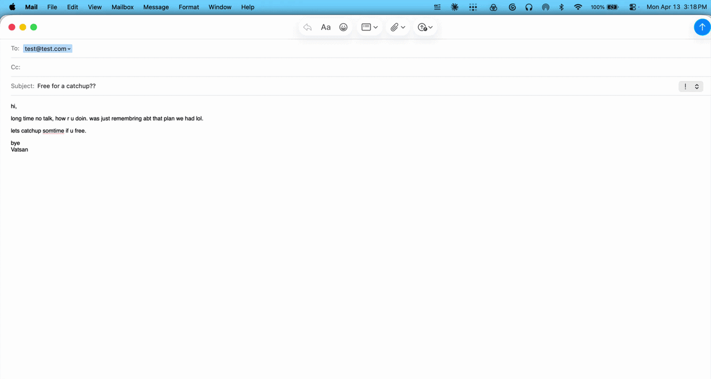
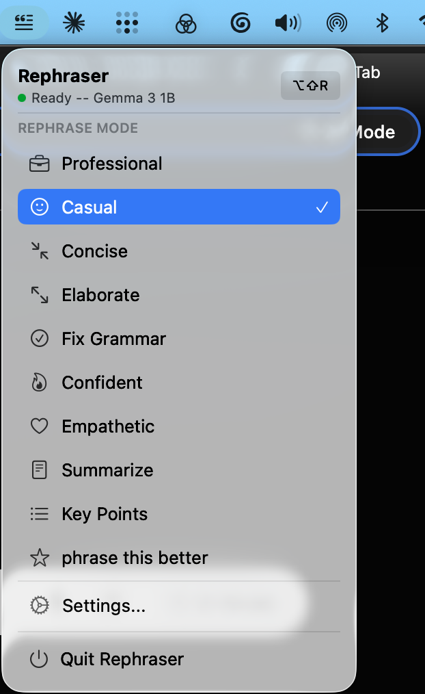
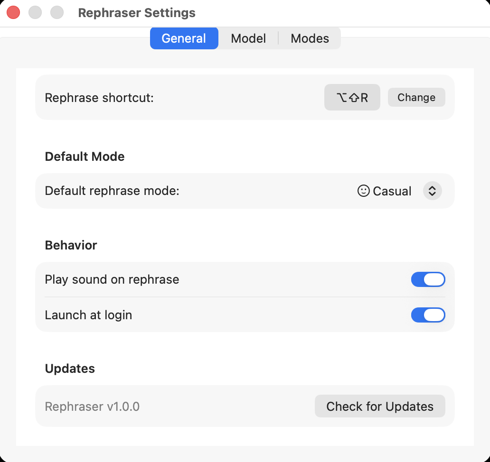
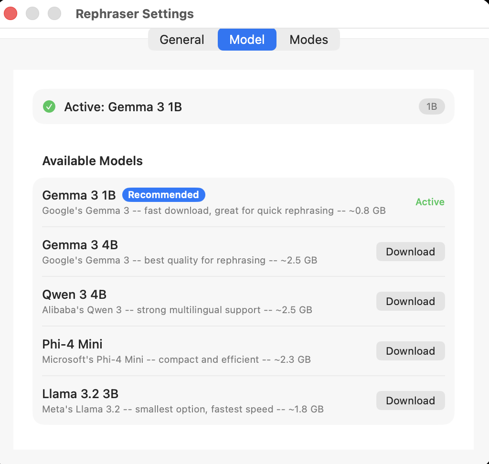
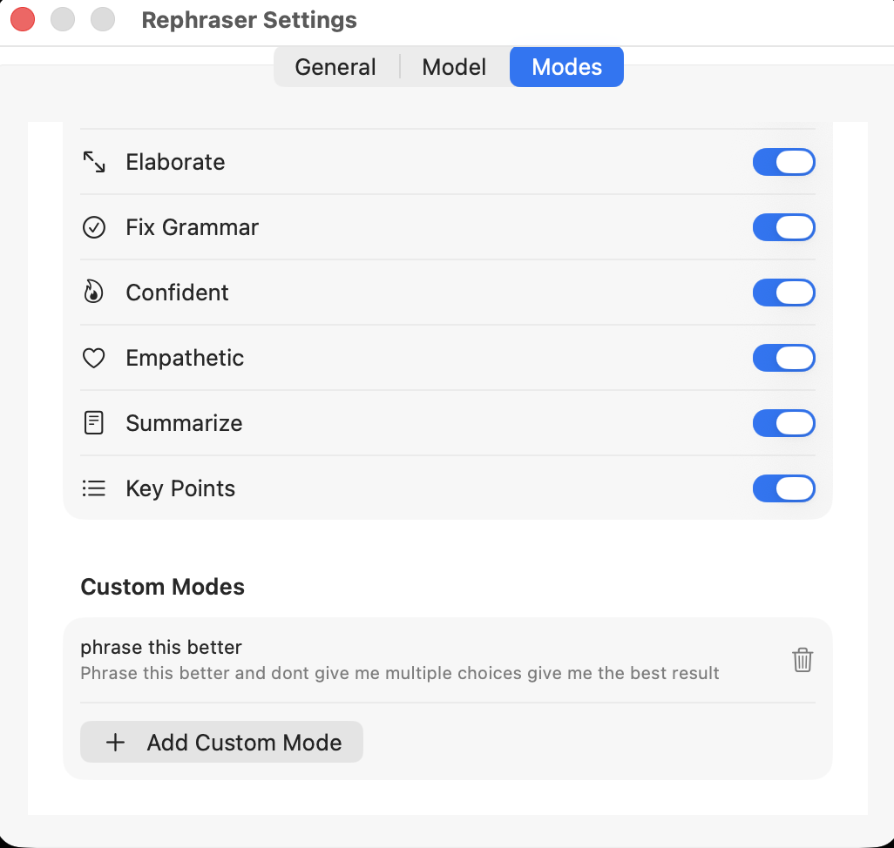

Select text anywhere on your Mac or Windows PC, press a shortcut, get a better version in seconds. Powered by Apple MLX on Mac and llama.cpp on Windows — 100% on-device. No cloud. No API keys. No accounts.
xattr -d com.apple.quarantine /Applications/Rephraser.app
No menus, no context switching, no copy-pasting into ChatGPT.
Highlight text in any app — email, Slack, a Google Doc, your IDE.
Hit ⌥⇧R (or your custom combo). A floating panel streams the result in real time.
Enter to replace, Escape to cancel. Toggle diff view or change modes before deciding.
Click any image to view full size. Navigate with arrows or keyboard.





Copilot wants a Microsoft 365 subscription. Grammarly ships your text to the cloud. Wordtune paywalls the good stuff. Rephraser does none of that — it's the only AI text rewriter on Windows that's free, open-source, fully offline, and works in every app.
Same 9 modes, same 5 models, same shortcut — now on your PC. Runs on CPU alone, so it works on a 2016 ThinkPad or a Copilot+ Surface.
Apple MLX on Mac, llama.cpp on Windows. Your text never leaves your device.
Slack → casual. Gmail → professional. Auto.
First token in under 2s. No spinner.
See exactly what changed before accepting.
Write your own system prompts.
Gemma 3, Qwen 3, Phi-4, Llama 3.2.
Any key combo. Set in Settings.
System-wide. No plugins needed.
No internet after model download.
Images, files, rich text — all restored.
Menu bar on Mac, tray on Windows. Always ready.
30s limit. Auto-cancels if stuck.
Apple's Writing Tools give you 3 fixed tones, route complex requests through cloud servers, fail in WhatsApp and web editors, and are blocked in China. Microsoft Copilot, Grammarly and Wordtune all run in the cloud and gate features behind paid plans.
Rephraser gives you 9 modes, custom prompts, model choice, context-aware suggestions, diff view, and works in every app. All on your device — free on Mac and Windows.
Apple gives you Friendly, Professional, and Concise. Rephraser ships with 9 — and you can write your own system prompts for anything else.
Gemma 3 1B downloads automatically on first launch. Swap anytime in Settings — no terminal needed.
Fast download · Great for quick rephrasing · ~0.8 GB
Best quality · ~2.5 GB
Strong multilingual · ~2.5 GB
Smallest and fastest · ~1.8 GB
One shortcut. Nine modes. Fully private. Runs on your computer — Mac or Windows.
Download for MacmacOS 14 (Sonoma) · Apple Silicon (M1+) · ~0.8 GB for default AI model
Yes. Rephraser is completely free — no subscriptions, no API keys, no hidden costs. The AI model runs locally on your computer, Mac or Windows.
Never. Rephraser runs 100% on your device — Apple MLX on Mac, llama.cpp on Windows. Your text never leaves your computer, not even for analytics or telemetry.
Apple's Writing Tools offer 3 fixed tones, fail in apps like WhatsApp, route complex requests to the cloud, and are blocked in some countries. Microsoft Copilot, Grammarly and Wordtune all run in the cloud and paywall the good features. Rephraser offers 9 modes plus custom ones, works in every app, stays fully on-device, includes a diff view, and is free worldwide.
Yes. After the initial model download (~0.8 GB), Rephraser works with zero internet. Airplanes, coffee shops, VPN tunnels — anywhere your computer works.
Mac: macOS 14 (Sonoma) or later with Apple Silicon (M1, M2, M3, M4 or later).
Windows: Windows 10 version 1809 or later, or Windows 11, on x64 hardware with 4 GB RAM. See the Windows install guide.
About 0.8 GB of free disk space for the default AI model either way.
Yes. Beyond the 9 built-in modes, you can create unlimited custom modes with your own system prompts to match any writing style or use case.
Microsoft SmartScreen warns on any unsigned binary. Rephraser is open-source — we'll add a code-signing certificate after the first 100 Windows downloads (signing trades money for trust, and we want a signal that users actually want it first). Every Windows release is scanned by VirusTotal in CI; the scan URL is attached to each GitHub release. Click More info → Run anyway to proceed.
Rust binaries that call SendInput and read the clipboard sometimes trip heuristic AV engines. Each GitHub release carries a VirusTotal scan link. If fewer than 3 engines flag the file it's almost certainly a false positive. The full source is on GitHub and you can build it yourself if you prefer.
It can collide with Outlook's Reply All and a handful of Adobe shortcuts. If Rephraser can't register the hotkey at startup, onboarding prompts you to pick another. You can change it any time in Settings — both Mac and Windows hotkeys are fully remappable.
ARM64 (Snapdragon X, Copilot+ PCs): planned for v0.2. v0.1 is x64 only.
Silent install: the MSI supports msiexec /i Rephraser-setup.msi /quiet. Per-user install, no admin required, installs to %LOCALAPPDATA%\Programs\Rephraser\.
Rephraser is free, open-source, and ad-free on Mac and Windows. If it saves you time, consider buying me a coffee. Every bit helps keep development going.
Donate via PayPal